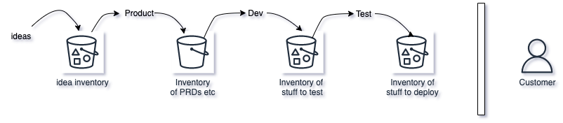
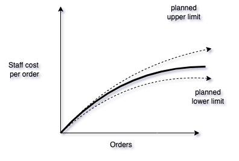

Staffing is relative to expectations. In the growth mood, you may want to build a lot of features and stretch, you may feel understaffed. If you are in the mood for conservation, you would want to maximise on efforts that make you money in the next 3-6 months period, so a lot of work being done may feel redundant and you feel you are overstaffed. Since this is a complex problem, we need to look at the levers.
Ideal systems
In an ideal system, if a person does x amount of work done in a time cycle, and you have N people, you will expect Nx amount of work done in that time cycle. All work is homogenous, and all the people can perform the same work.
In an ideal system, you may have all of your people directly working on the KPI you are measuring in the next 3-6 month cycle. Meaning all the work being done is translated to revenues without any variability in time.
Such an ideal state does not exist in software product engineering and it’s important to therefore list down the complexities or differences from the ideal system.
Real world systems
Modern software product engineering is vastly different from this ideal world -
- Most of the time you are not doing what you have done before, so there is high variability in the type of work
- Because of the creativity and problem solving skills involved no two people finish building a feature in the same amount of time
- It is also hard to size up the work, estimates are almost always wrong, so almost always, plans are incorrect and hopeful.
- There are multiple roles like PM, Software Engineer, Quality Engineer, Data Scientist etc involved in taking one feature to the customers
- The time window for product launches can be variable as well, depending on the market conditions like competition, regulations and just plain human greed
- There are systems upstream and downstream the product engineering microcosm that can have variable impact on product engineering
This is why measuring individual productivity and then deciding whether you are under or overstaffed is error prone and rather futile.
Further differences from the ideal state -
- A lot of software product engineering work is like running experiments, and has a probability of success much lower than 1. So a lot of waste is expected.
- A lot of presumably waste comes up as a revenue stream some time later, unexpectedly.
- The person directly in charge of prioritisation and staff allocation may be making poor decisions, and it’s quite common to see just a leadership change making a difference to revenues
- The “when” of the impact is also variable - some teams are building for the here and now, some, like an R&D team may be focused on building things that may take 2-3 years to reach the market and give you a major advantage over competitors
So, when figuring out staffing, depending on your discipline to stick to plans and how dire the financial situation is, you may see the R&D team as a burden on the balance sheet, or you may see it as an investment for a glorious future. And a lot of work not showing up on the balance sheet may make you want to do more experiments or times may push you to reduce and concentrate. It’s all very relative, but as I will try to assert - depends on how you plan and how disciplined you are in sticking with the plan.
Till now, in an indirect way, I am converting staff numbers to cost and vice versa. Yet another important difference from the ideal system in the real world is people are people, not letters in the alphabet. Every one of them is different and that difference and diversity is valuable for creative work. Some have growth spurts in a situation and outperform, some don’t perform well under different circumstances. And the mix of staffing matters to the cost of staff too; you may choose to staff more senior people assuming more seniors increases the quality and throughput of your system, but that system is costly. And at some time you may have more tolerance for a little lower quality or a little slower pace, and the cost looks prohibitive.
Finally, there are many short term and variable impact situations you may encounter, like some important people leaving, or joining, a regulatory change rendering a whole product or some features unviable, or a natural calamity like the pandemic taking away a big group of your customers. Or you may luck into a feature that has an oversized impact on your balance sheet, and otherwise, you may have serial failures of what you have been building one after another. The cost of money may go up.
Once again, planning with such knowledge at hand is important, but more on this later.
Now that we’ve laid down the differences, let’s try to find out how to identify staff imbalance using them.
Identify Queues and size of inventory
The 1st thing to do is to identify if your team is running efficiently. Not individuals, but teams. And we do that because team inefficiencies can muddle all the data and nothing we do after this step is usable beyond guesswork. And anyways, it’s always better to know if your teams are working well, at whatever stage you are at or whatever financial situation you are facing, so that the actions you take are well informed.
A product engineering team works on a queue of ideas or experiments. But internally there are many queues as depicted below. Once you visualise this, it is quite easy to spot where you are over or understaffed.

Now, if your PMs are consistently creating more work than the engineers can consume, you have a staffing imbalance. You may do one of two things, depending on your plans and financial situation : you can either reduce the number of PMs or you can increase the number of engineers (please read the Mythical Man Month before doing this blindly). Whichever way you go, the focus should be on reducing the queues and inventory. One thing to add here is that you always need some slack in the system to ensure that variability in work, and cross team collaboration flows smoothly. Around 20% is advisable, but your mileage may vary.
Manage using Staffing cost per unit of sale
So let’s assume that you have an idea of efficiency and you have an ideal-ish state of efficiency that you want to continue at, and you will keep an eye on the queues, we should move to another old school but effective method that helps understand staffing imbalance - tie staff cost to your unit economics, add tolerances and measure how you are doing periodically. The ideal plot for a software product engineering team should look like the one below, the dark line (somewhat log growth); if the growth is linear then a business may not be viable.

Consider that your key performance indicator is daily order count. If the staff cost per order increases or decreases within planned bounds, let’s say +/- 10% range, then you don’t have to worry too much. If it grows above, then you have a reason to study where you are leaking. The question then arises, how do you plan for an ideal staff cost per unit number ? There are many approaches people use, unfortunately almost all approaches I have seen people use are local to their concern and type of business, since it depends a lot on what the work is, how staff is allocated, the mix of people and the location of the workforce. My suggestion is to always measure this and baseline against the last cycle, like in XP’s Yesterday’s weather method of estimating capacity.
This number or chart should ideally be used as an alert or alarm, a nudge to dig deeper to find the leak. Yet, if the number is out of bounds for a couple of cycles, you generally do have a problem at hand; either you are overstaffed or are not able to hire people. By walking through the value stream, you should get clarity on why this staff cost per unit is where it is. This value stream shouldn’t just be in a small department, like the product engineering microcosm, but the whole company’s value stream.
For example, let’s say you are building a feature, the value stream study for queues and inventories may include the following considerations -
- Internal factors - eg. ops or sales bottleneck, your product engineering team may be able to run a lot of experiments for the feature, but the ops and sales teams may not be able to control and operate those many permutations. In this case, do you hire more operations staff or reduce the number of features and experiments ?
- External factors - eg - you may need to get new users or reactivate old ones to get some growth experiment running. Let’s say you create a hyperlocal experiment that you need to run in 5 places but you don’t have enough users to execute a statistically significant experiment. Whatever experiment product engineering creates, it won’t bring the right results. This leads to more experiments and creating a myth of understaffing.
In effect, this method is focused on deploying your staff with revenue impact in mind, and is dependent on planning and discipline towards execution. The revenue impact may be temporally local, in the vicinity of 3-6 months, or it may be drawn out 2 years ahead, that’s the mix a leader has to decide, based on their business acumen. That and ruthless discipline, regardless of the financial situation you find yourself in. If you have teams working on things outside of your plans, that’s overspending, or you need to update your plans to recognise a possible new revenue stream.
Method of making bets safer
Founders take outsized bets on new ideas, and one of the big reasons we see layoffs when some of these bets do not pay off. This is the nature of the game, because the wins are really high. When things do not work, you are obviously overstaffed and that for a long time. How do you then figure how how much to spend? This is perhaps out of scope for this essay, since it is extremely difficult to understand and describe what will succeed and after how much effort. Great founders will tell you that they had to persevere through multiple obstacles over many years before they succeeded.
One thing that I have seen work always, regardless of whether an idea works on not, or for how long - your chances of success get a big boost if you run a tight ship - not penny pinching but having a plan, being disciplined to execute that plan across all levels and ensuring that the ship is tight by aggressively removing queues and bottlenecks. So company cultures where technical and financial discipline is in-built in experimenting have a better chance of success, given that you rarely see a company seeing long term success (meaning, profits) being completely unstructured and ill disciplined. It is so obvious, yet ignored, perhaps like physical exercise is ignored by most.
Having plans for bets - budget allocation and how to spend, what are the milestones, what do you need to see to spend more, when will you stop spending, is therefore very important, along with focus on efficient execution.
Understaffed?
Ok, so most of the above is maybe useful to figure out overspending on staff. How do you find out if you are spending less? I posit that the same methods apply. Identifying queues and unit economics can help you find if you need to hire more people in a particular role. Once you have identified, for eg. that there are more PRDs than what engineers can work on, you have to decide whether you need to hire more people or cut down on product managers. Many people may blindly go hire more developers, but the wise ones would look at the planned spending on staff and budgets and then hire incrementally. Having that staff cost vs unit economics chart handy helps responsible bets.
Word of caution, hiring a lot of people in a very short duration is generally a sign of excessive risk taking and is prone to failure for many reasons in combination, including things like poor onboarding and effects on culture.
Summary
- Plan ahead, short or long for staff budget based on unit economics. This is the base you have to protect.
- Identify queues and building of inventory and fix based on your plans. This makes your team efficient.
- When you are staff budget looks off, study the value stream again to find reasons and fix based on your plans. Rinse, repeat.
- Use the same method for regular iterative building as well as outsized bets.
Acknowledgements - Thanks to Diwakar Kaushik for reading and sharing insights about how to use staff cost per unit economics and the whole company’s value stream.